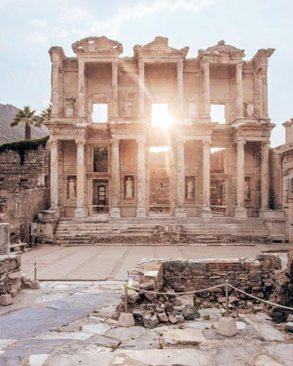

Mobil · 03 Yer detayı
Kararı tek ekranda verdirir.
Görsel, süre, ücret ve mesafe aynı bakışta. Sesli rehber ile yakındaki izler kararı destekler; alt eylem çubuğu 48 px yüksekliğiyle başparmak menzilinde.

Tarih
Doğrulanmış
Atlasia rehberi
Efes Antik Kenti
Selçuk, İzmir · Türkiye
Şu an açık
18:30'da kapanıyor
Sesli anlatım
Giriş
₺ 400 / kişiSüre
2 sa önerilenMesafe
3,2 kmCelsus Kütüphanesi'nden yokuş yukarı yürüyün; günün ilk ışıkları taşlarda. Kalabalık 09:30'dan sonra artıyor.
Konum tabanlı rehber
Kütüphanenin 12.000 rulosu 07:42 · Türkçe · çevrimdışı hazırYakındaki izler
Haritada gör
Yamaç Evler
Mozaikler ve freskler · 4 dk yürüyüş
240 m
Şirince · kahvaltı molası
Gezgin izi · Elif K. · 8,4 km
2 sa